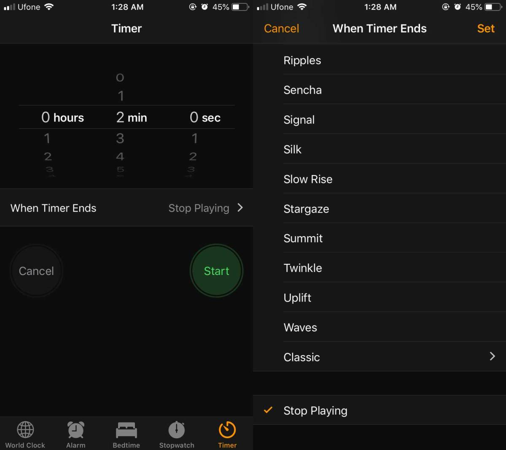

The timer app on iOS utilizes a scroll wheel to select how long you want the timer to run for. The problem with this is that it is very time consuming to select a very specific time, and can be easy to input the wrong time into. Purely anecdotal example, one time when I was 19 I woke up for work with an alarm I set, decided that I wanted some more sleep so I opened the timer and scrolled until I hit 15 minutes, only to nearly be late for work once I realized I scrolled on the wrong side and selected 15 hours instead. Obviously there's user error in that example, but it was only possible due to the design of the utility.
